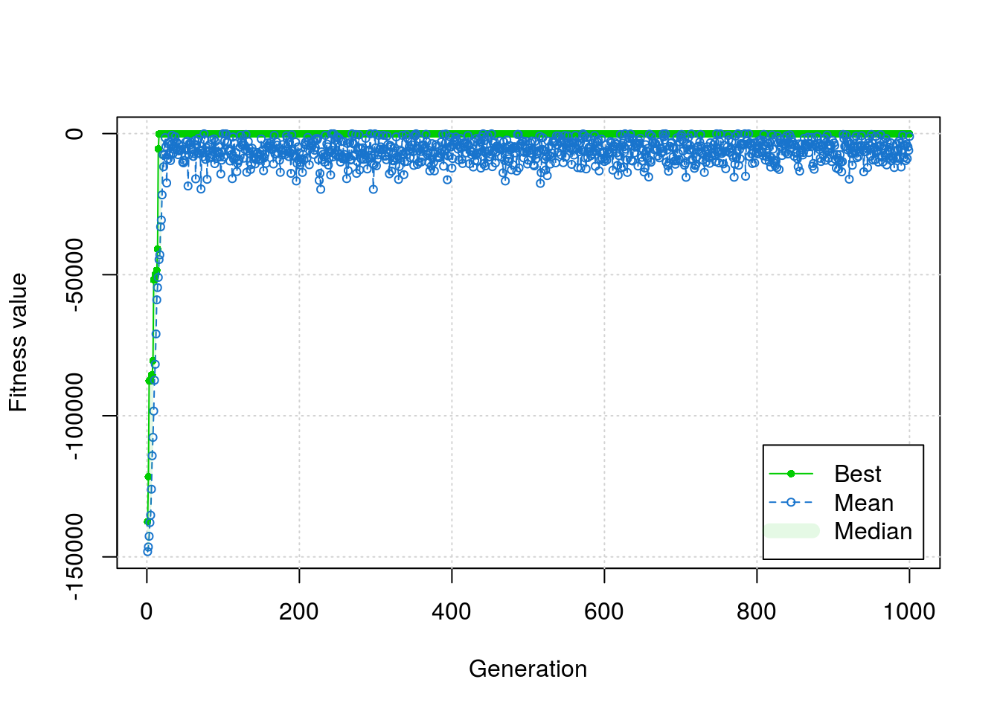

On a whim, I traded a handful of tokens imbued with symbolic value (and acquired arbitrarily in exchange for my labor) for a packet of shaped metal. Inside this pack were veterans of the Space Age: resistors, capacitors, transistors, and an integrated circuit. The last of these pieces, merely the size of a fingernail, Man had manufactured to keep time (just in case, I suppose, He might otherwise find it slip away?). I have no regard for clocks, but timer circuits can also make sound: as the regular oscillations of current pass through a speaker, they vibrate the air such that we, by a trick of anatomy and signal processing, can hear noise and assign it an emotion.
I want to make sound. This is why I purchased a 555 timer integrated circuit. These circuits have 8-pins that, when wired in a certain configuration, can make sound. A 555 has two modes. The first, astable mode, outputs a continuous oscillating current when a switch is pressed. The second, monostable mode, outputs a continuous non-oscillating current for a fixed period of time when a switch is pressed. We will use the 555 timer in astable mode to build a circuit that synthesizes sound (i.e., a synthesizer).
Pitch is determined by the oscillatory frequency of the output current. We can calculate this frequency based on three parts labelled \(R_1\), \(R_2\), and \(C\). Measuring resistance in \(\textrm{k} \Omega\) and capacitance in \(\mu \textrm{F}\), the formula is:
\[ f = \frac{1440}{(R_1 + 2R_2)C} \]
f <- function(r1, r2, c = .01){
1000 * 1.44 / ((r1 + 2*r2) * c)
}With \(C\) fixed, it is easy enough to find \(R_1\) and \(R_2\) for a single frequency. However, to make a multi-tone synthesizer, we will need to alter either \(R_1\) or \(R_2\) for each note. In practice, we can achieve this by having each piano key add a little bit of resistance to \(R_2\) (i.e., via a series configuration). For example, if \(R_1\) and \(R_2\) outputs middle C, then \(R_1\) and \(R_2 + R_A\) might output B a semi-tone lower.
The question becomes: how do we find the values of \(R_1\), \(R_2\), and \(R_A\) such that the addition of each new \(R_A\) (i.e., \(k\) added resistors) makes \(R_1\) and \(R_2 + kR_A\) equal the next note in the dichromatic scale?
This looks like a problem that we can solve with optimization by way of a genetic algorithm. To simplify the issue, however, we will fix \(R_A\) to \(10 \textrm{k} \Omega\) (convenient, since I already own a bunch of these). First, however, we need to define a “ribosome” function that converts binary input into a list of integers (see here for what that means).
ribosome <- function(string, nbits,
how = function(codon) strtoi(codon, base = 2)){
if(!is.character(string)){
string <- paste0(string, collapse = "")
}
if(nchar(string) %% nbits != 0){
stop("Digital gene not evenly divisible by chosen codon size.")
}
output <- vector("list", nchar(string)/nbits)
for(i in 0:(nchar(string)/nbits - 1)){
codon <- substr(string, i*nbits + 1, i*nbits + nbits)
output[[i+1]] <- do.call(how, list(codon))
}
return(output)
}Now, we can define the “fitness” function. This will measure the error of each attempted solution. Then, the genetic algorithm will allow the better performing solutions to “reproduce” (with “crossing over”), potentially giving rise to even better solutions. Specifically, our fitness function measures how closely the predicted frequencies match the expected (i.e., desired) frequencies. Here, the expected frequencies correspond to the octave ascending from middle C. Note that we negate the error because genetic algorithms seek to maximize the result of the “fitness” function.
fitness <- function(binary){
AA <- ribosome(binary, nbits = 16)
predicted <- sapply(1:13, function(i){
f(AA[[1]], AA[[2]] + i*10, c = 0.01)
})
expected <- c(523.25, 493.88, 466.16, 440.00, # semi-tones
415.30, 392.00, 369.99, 349.23,
329.63, 311.13, 293.66, 277.18,
261.63)
error <- mean((predicted - expected)^2)
return(-1 * error)
}We can now call the genetic algorithm, then plot its performance over time. Here, I’ll run the algorithm for 1000 breeding cycles (although originally I used 50000).
library(GA)
set.seed(1)
res <- ga(type = "binary", fitness = fitness, nBits = 32, maxiter = 1000)
plot(res)
Often, genetic algorithms converge on multiple equally good solutions. Let’s view them all.
for(i in 1:nrow(res@solution)){
print(c("r1" = ribosome(res@solution[i,], nbits = 16)[[1]],
"r2" = ribosome(res@solution[i,], nbits = 16)[[2]]))
}## r1 r2
## 217 18
## r1 r2
## 153 50Using the second set of \(R_1\) and \(R_2\) values from above, the synthesizer works! Although fixing \(R_A\) seems to prevent the model from converging on a perfect solution, the synthesizer only wobbles out of tune by a few cents in each direction. When playing melodies, I do not notice the sharpening or flattening of any notes. Although using a fixed \(R_A\) made it much easier to assemble the circuit, a post-hoc evaluation of the predicted frequencies suggests that a fixed \(R_A\) might not work for a synthesizer that spans multiple octaves.
Figure 1. Me holding a DIY synthesizer tuned to C major.
Figure 2. The 555 timer circuit in astable mode.
© 2019 | thom@tpq.me | Twitter | GitHub